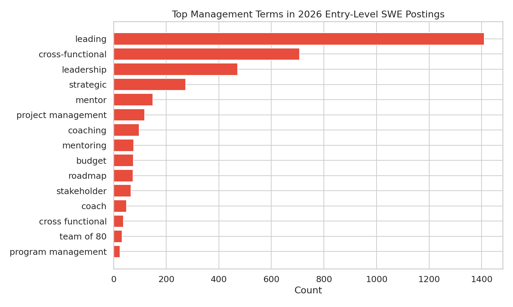
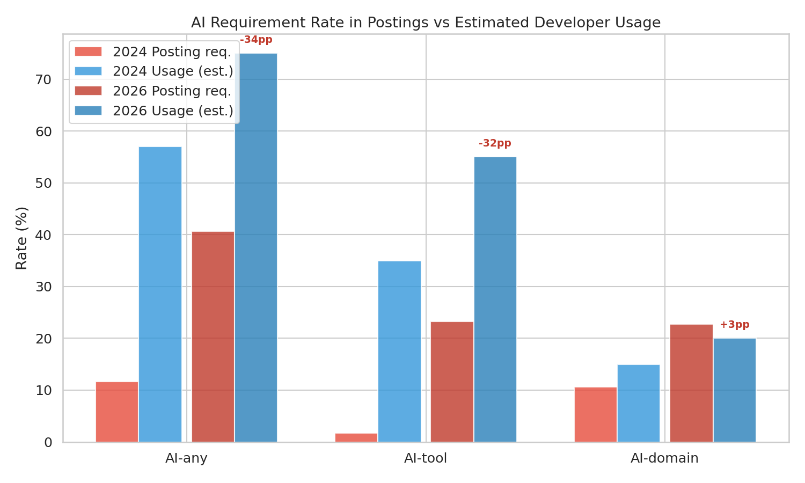
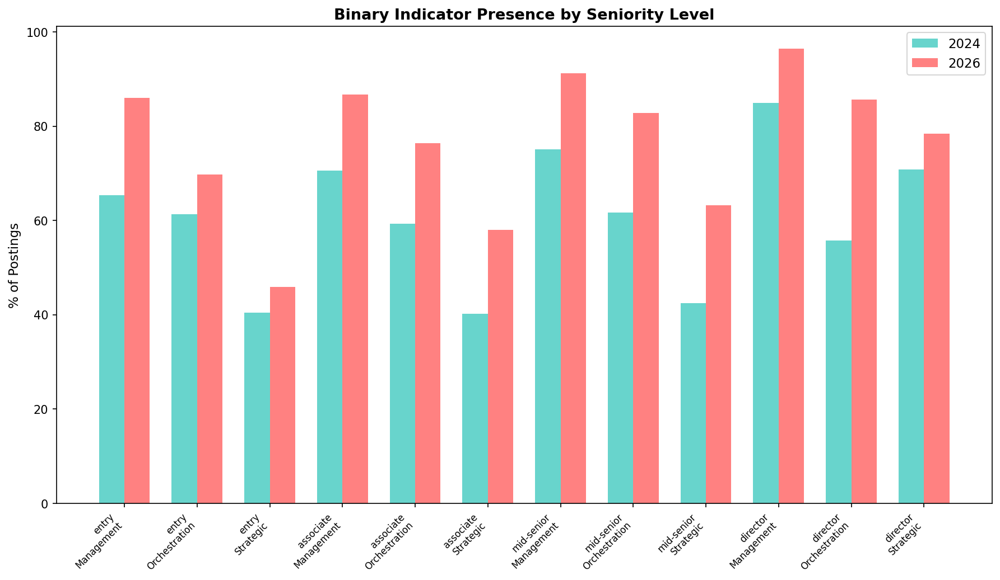

Corrections and Revisions: The Self-Correcting Methodology
Headline
Wave 3 overturned several Wave 2 findings, demonstrating the value of iterative validation. The management indicator was corrected from +31pp to +4-10pp. Soft skills expansion turned out to be non-SWE-specific. Junior-senior semantic convergence failed calibration. Requirements lag usage, not the reverse. These corrections strengthen the remaining findings.
Major corrections
1. Management indicator: +31pp became +4-10pp (T22)
Original claim (T11): Entry-level management indicators surged from 9.4% to 40.8% (+31pp).
What went wrong: Three regex patterns captured noise, not signal:
| Pattern | Match rate (2026 entry) | Actual management usage |
|---|---|---|
\bleading\b |
33% | 0.6% (99.4% were adjective: "a leading company") |
\bcross-functional\b |
19% | 16% (84% were collaboration, not management) |
\bleadership\b |
12% | 23% (77% were company boilerplate) |
Corrected claim: Using validated/strict patterns only, the entry-level management increase is +4-10pp -- real but modest, not dramatic.
Additional finding: Management expansion is field-wide (DiD ~ 0), not SWE-specific. Control occupations showed similar growth. This is likely an HR template modernization trend, not AI-driven restructuring.

2. Soft skills expansion: SWE grew less than control (T18)
Original claim (T11): Soft skills in entry-level SWE postings increased by +16pp.
Correction (T18): While the absolute increase is real, the cross-occupation DiD is -5.1pp -- SWE soft skills grew LESS than control occupations. This is not a SWE-specific phenomenon.
3. Junior-senior semantic convergence: Failed calibration (T15)
Original suggestion: 2026 junior postings are semantically closer to 2024 senior postings, suggesting convergence.
Correction (T15): The within-2024 calibration shift (comparing arshkon vs asaniczka) exceeds the cross-period change. The "convergence" is within the noise floor. The specific requirement-level signals from T11 (AI requirements, validated scope indicators) are the right evidence for entry-level changes, not embedding similarity.
4. Requirements vs usage direction: Inverted (T23)
Original hypothesis (RQ3): Employer AI requirements outpace developer AI usage.
Finding (T23): The opposite is true. Posting AI requirements (~41%) lag developer usage (~75%). The gap narrowed from -45pp to -34pp between 2024 and 2026. Employers are catching up, not inflating beyond reality.

5. Management migration: Rejected (T21)
Original hypothesis: Management responsibilities migrated from senior to entry-level roles.
Finding (T21): Management language expanded at ALL seniority levels: - Entry: +31pp (corrected to +4-10pp with validated patterns) - Mid-senior: +27pp - Director: +7pp (binary); density actually fell -23%
This is universal template expansion, not seniority-specific migration. The distinctive senior change is orchestration surging (+16% mid-senior, +46% director), not management declining.

What the corrections show about methodology
The correction sequence demonstrates a rigorous, self-correcting exploration:
- Wave 2 generated strong initial findings with broad pattern sets
- Wave 3 tested every finding against cross-occupation DiD (SWE-specificity), within-firm decomposition (composition control), and ghost forensics (measurement validation)
- Three of five major Wave 2 claims were moderated or overturned
- The surviving findings (AI surge, junior decline, domain recomposition) are stronger because they survived the correction process
The +31pp to +4-10pp correction is itself a contribution: it demonstrates that keyword-based scope inflation measures require careful pattern validation, and that many commonly used management/leadership indicators capture boilerplate rather than role content.
Text quality asymmetry warning
LLM-cleaned text reduces 2024 management indicator rates by ~15pp compared to rule-based text. The 2026 scraped data has 0% LLM-cleaned text. This asymmetry systematically inflates the apparent 2024-to-2026 change for ANY boilerplate-sensitive indicator. When LLM-cleaned 2026 text becomes available, 2026 management rates will likely drop further, potentially reducing the corrected +4-10pp estimate.
Full analysis
- T22: Ghost Forensics -- management indicator correction and AI aspiration analysis
- T18: Cross-Occupation DiD -- SWE-specificity tests for all metrics
- T15: Semantic Landscape -- convergence calibration failure
- T21: Senior Evolution -- management migration rejection
- T23: Divergence -- requirements lag usage finding